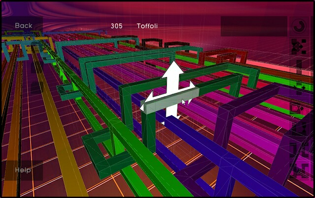

Noon Silk (noonsilk@gmail.com), University of Melbourne.
"When are two computations equivalent?"
"What is the smallest functionally-equivalent circuit?"
"Can we build up smallest computations somehow?"
Diagrammatic moves!
Invariants!
Algebras!
... and software!
Reidemeister moves, Kirby moves, moves on tangles.
Jones polynomial, Alexander polynomial, Khovanov homology, etc.
A thing which doesn't change under the moves.
Temperley-Lieb algebra, planar algebras, chord algebras.
SnapPy
Regina

meQuanics
Trying to enumerate valid shapes.
Then understand them via link diagrams